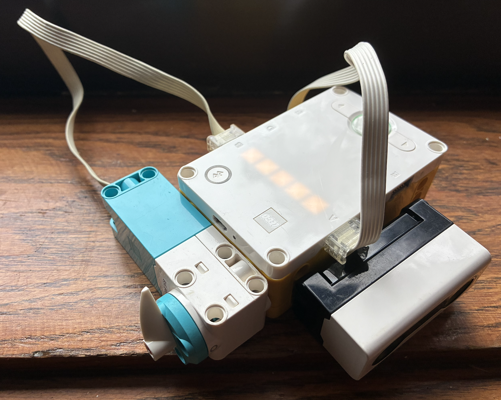
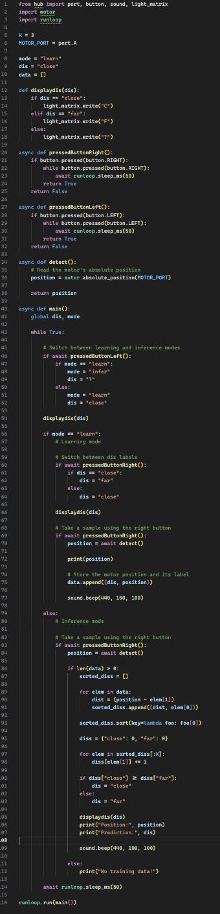

Here, we are using a simple KNN algorithm to classiy one dimentional data. I decided to classify distances as either close or far using the distance sensor. Here, I found using K=3 worked fine, but I'm certain I could have gotten away with K=1.
The device I constructed to acheieve this is incredibly simple. It is composed of a motor (to indicate input and output) and a distance sensor (to feed in data).
This project leads into Project 9: Apple or Banana? where we use more dimentions of data.

